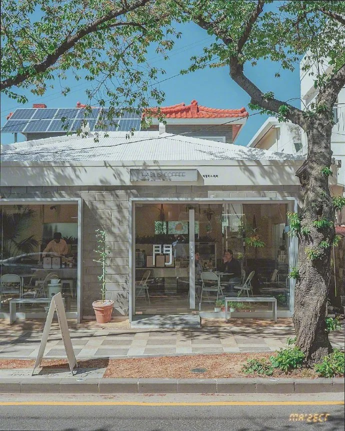
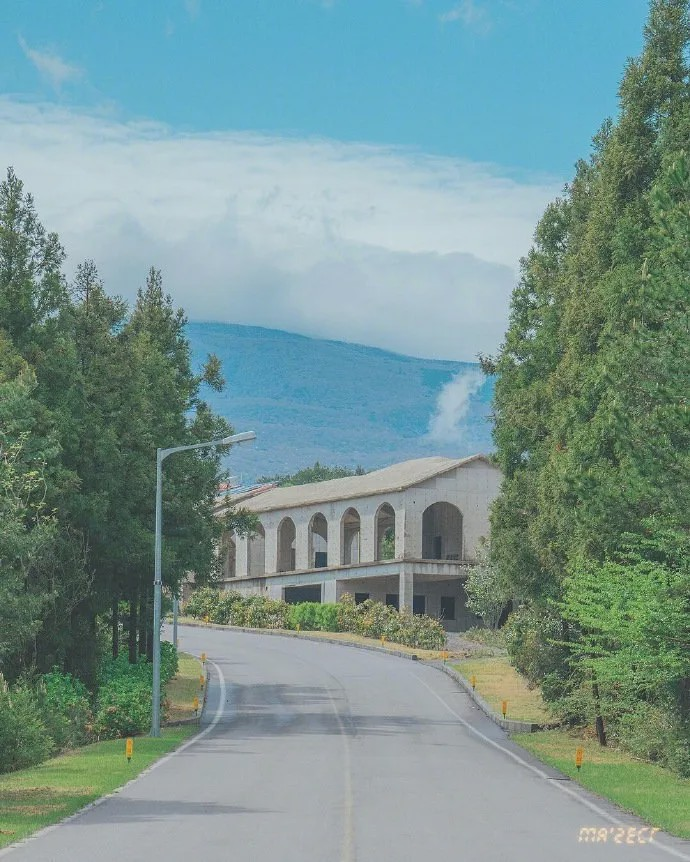

<!--css实现的全景轮播效果-->
<html>
  <body>
    <div class="container">
      <div class="card-box">
        <div class="card">
          
        </div>
        <div class="card">
          
        </div>
        <div class="card">
          
        </div>
      </div>
    </div>
  </body>
</html>
<style>
  * {
    margin: 0;
    padding: 0;
  }
  body {
    height: 100vh;
    display: flex;
    justify-content: center;
    align-items: center;
    overflow: hidden;
    /* background: url("./5.jpg") center;
    background-size: cover; */
  }
  .container {
    width: 600px;
    height: 350px;
    margin-top: 60px;
    position: relative;
    /* background-color: pink; */
    perspective: 1000px; /*透视*/
  }
  .card-box {
    width: 100%;
    height: 100%;
    /*给父元素加一个3d盒子属性*/
    transform-style: preserve-3d;
    transform: rotateY(0) translateZ(-700px);
    /* background-color: skyblue; */
  }
  .card {
    position: absolute;
    left: 0;
    top: 0;
    width: 100%;
    height: 100%;
  }
  .card img {
    width: 100%;
    height: 100%;
    border-radius: 10px;
  }
  .card:nth-child(1) {
    transform: rotateY(0deg) translateZ(700px);
  }
  .card:nth-child(2) {
    transform: rotateY(120deg) translateZ(700px);
  }
  .card:nth-child(3) {
    transform: rotateY(240deg) translateZ(700px);
  }
  @keyframes cardRotate {
    0%,
    20% {
      transform: translateZ(-700px) rotateY(0deg);
    }
    45% {
      transform: translateZ(-700px) rotateY(-120deg);
    }
    75% {
      transform: translateZ(-700px) rotateY(-240deg);
    }
    100% {
      transform: translateZ(-700px) rotateY(-360deg);
    }
  }
  .card-box {
    animation: cardRotate 10s cubic-bezier(0.77,0,0.175, 1) infinite;
  }
  .card{
    -webkit-box-reflect: below 15px linear-gradient(transparent 50%,rgba(255,255,255,.3));
  }
</style>
